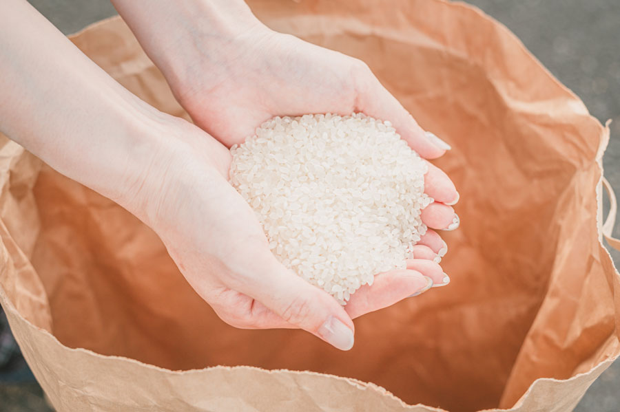
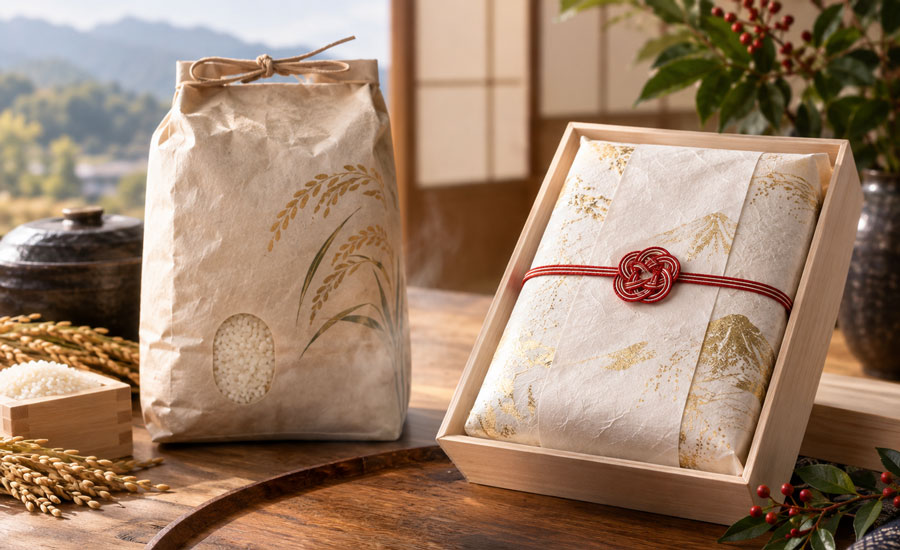

01
新潟産米を知り尽くした目利き
お米屋歴40年の経験を活かし、産地や品種ごとの特徴を見極めながら、お客様のお好みや用途に合ったお米をご提案します。
産地と味を知り尽くしたお米屋が、
お好みや用途に合わせて一番合うお米をご提案。
ご家庭用から贈答用、定期便まで、
こだわりの新潟米を全国へお届けします。
ご家庭用、贈答用、定期便など用途に合わせてご提案します。

新潟県加茂市にある「青柳米店」は、新潟産米を中心に取り扱う地域密着のお米屋です。
コシヒカリをはじめ、新潟県内のさまざまな産地のお米をご用意し、お客様のお好みや食べ方、ご予算に合わせて最適な一品をご提案しています。
お米は自家精米し、おいしさを大切にしながら全国へ発送。毎月決まったタイミングでお届けする定期便や、高級感のある和紙の真空包装を使用した贈答用にも対応しています。
お米の選び方はもちろん、おいしい炊き方や保存方法まで、気になることがあればお気軽にご相談ください。

お米屋歴40年の経験を活かし、産地や品種ごとの特徴を見極めながら、お客様のお好みや用途に合ったお米をご提案します。
お米は自店で丁寧に精米し、精米したてのおいしさをお届け。季節が変わっても、できるだけ安定した味わいを楽しんでいただけるよう品質管理を大切にしています。
新潟のおいしいお米を全国へ発送。早ければ翌日、遅くても4営業日以内のお届けを心がけています。毎月便利な定期便もご相談いただけます。

毎日の食卓はもちろん、大切な方への贈り物にも対応。贈答用には高級感のある和紙の真空包装をご用意し、用途に合わせて丁寧にお届けします。

加茂市七谷で育ったコシヒカリ。
毎日の食卓にはもちろん、新潟のお米をじっくり味わいたい方にもおすすめです。

大特価でご用意している、新潟を代表するブランド米。
ご家庭で気軽に魚沼コシヒカリをお楽しみいただけます。
新潟のおいしいお米を多数取り揃えています。お好みやご予算、用途に合わせておすすめをご案内しますので、お気軽にお問い合わせください。
毎月のお届けも承ります。お米の種類・数量・配送ペースなど、お客様のご希望に合わせてご相談いただけます。
高級感のある和紙の真空包装に対応しています。料金や包装内容などの詳細につきましては、ご注文時にお問い合わせください。
※価格や在庫状況は仕入れなどにより変更となる場合があります。

お米屋歴40年
長年、新潟のお米と向き合いながら、おいしい産地や品種について今も学び続けています。
お客様に合ったお米をご提案することはもちろん、炊き方や保存方法など、お米に関するちょっとした疑問にも丁寧にお答えします。
実はクイズや懸賞も大好き。
2000年には「クイズ$ミリオネア」で14問正解し、750万円を獲得。懸賞では軽自動車やイタリア旅行に当選した経験もあります。
お米の話からちょっと楽しい話まで、気軽に声をかけていただける町のお米屋を目指しています。